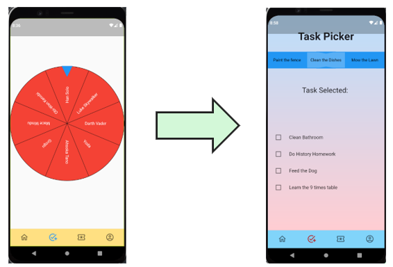
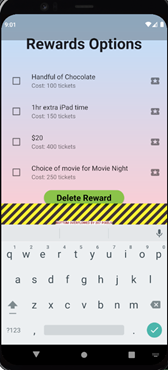

Our group project started out as an idea for the project component in the first individual assignment we were given, the idea was to tackle the issues of procrastination and the lack of motivation when completing mundane and tedious tasks (mostly associated with work or school) by developing a mobile application that combines the various elements of a video game to the ultimate task’s organisation tool known as the to-do list.
The main source of inspiration for such idea came from a personal experience that a team member (Dat) had during his final year of VCE, which coincidentally was also when the Covid-19 pandemic had already been spread worldwide, causing a generous number of cities, states and even countries to be shut into lockdown. Obviously, this included the entirety of Victoria meaning that schools across the state are to be closed and students must resort to remote learning (something that most of the students that year are not familiar with), and due to being inexperienced, Dat finds himself hibernating through the majority of classes. After barely passing several SACs, Dat has decided to use this as a wakeup call and started using and implementing to-do lists to everything he does, this has proven to be very effective as Dat notices a significant bump not only in his educational performance but also the day-to-day operations and activities. Then when prompted to come up with a project idea for assignment 1, he thought to himself why not utilise the knowledge and technology he can attain from this degree to solve the same problem but for a younger consumer base whose attention span might be considered inadequate.
This project idea, later named Dopa-Mine, was then further fleshed out and developed by team Silence in assignment 2 and mostly assignment 3, where we’ve discussed and established our goals and desired outcomes for the actual prototyping of the tangible artifacts. Overall, as a group, we have decided that in order to present solid proof of concept, we will need to provide an aesthetic structure for the application which previews how the user interface will be laid out to provide users with a friendly, simple and satisfying experience when navigating around the app, and a functional demo that demonstrates the core features of the application (refer to the scopes and limits section).
Assigning tasks and the correlated rewards
Selecting and checking off the tasks
Exchanging the accumulated reward currency for other rewards
The team has also come up with a reasonable plan for achieving these bare minimum goals under a realistic timeframe, which is preferably a couple of days before the submission date since we also need to transfer the content of the report and artifacts into proper report format and website. For the functional demo component, we will be utilising Flutter which requires members to pick up an entirely new set of programming language, Dart, this will come with its own unique set of challenges but its simplistic widget style of coding should allow for easy and quick trouble shooting. As for the aesthetic component, that will be completed collaboratively through Figma (refer to tools and technology + risks section for more information regarding the softwares used) and since it is web based and doesn’t require any knowledge or experience with codes, it too should not be an issue for team members to pick up.
A non-essential feature that would ideally be nice to have is a social media plugin that links the users’ progress and statistics to their social media profile which then can be accessed and seen by added friends, yet another extra feature to this could be a competitive ranking system that ranks their progress and profiles based on how many of the in-game currencies (tickets) they earn per week (as a result of completing tasks, hence the more tasks get done = the more tickets they get). The results are to be displayed and updated constantly throughout the week and at the end, the user on top of the leaderboard will earn some sort of displayable badge, all of this is to enhance the effects of gamification and create this urge for users to compete and surpass one another due to competitive nature of human, which subsequently maximises their productivity without their acknowledgements.
As of right now (less than a week before submission), we have obtained most if not all the goals and achievements that were initially set out during the planning stage of the project, some of these include
Generally speaking, I’d say that we have satisfied the requirements of providing a proof of concept as both the tangible artifacts provide an overview of how the app will be aesthetically presented whilst highlighting the key features that are necessary to the basic functionality of the app.
Whether or not you anticipated them, there are bound to be obstacles and limitations when working with projects. The constraints that are in our project can be classified into two different categories, generic limitations and technical limitations, some examples of generic limitations that exist within our project are
The generic limitations are mainly solved through the better utilisation of our general related skills, whether that be better management/organisation in both the aspects of time and resource (have frequent meetings to touch base and make sure team members have a clear understanding of their assigned roles), communication is also key factor for working efficiently in a team ( be more alerted with team’s text channel and inquiries, check microsoft Teams every day at least once or better yet, always have it open in the background) and usually having a good work ethic generally helps too.
When working with flutter and coding with dart many issues and limitations were encountered. The first of which occurred during the preparation of software and preparing the environment for coding. We needed an android emulator in order to run previews of the app. The issue with this was a setting in the bios of the motherboard needed to be turned on. In order to fix this a simple, google search revealed what feature needed to be enabled and subsequently it was turned on.
One of the major issues faced was actually learning to code with dart. Luckily dart is quite simple in the sense that everything is structured as widgets and presented in a Scaffolding structure. This means content is sectioned in blocks. The simplicity of this style of coding meant that implementing features like buttons and forms was as simple as copying and pasting. However, learning how to properly use the widgets meant a lot of time on YouTube watching tutorials and on Stack Overflow learning off the community.
On top of this Flutter has an open-source library with community made widgets and features. One of these features which was originally planned on being implemented was the support of signing in with Google to make the sign in process easy and get the necessary information we needed to provide a personalised experience. However, after adding the dependency and countless hours on YouTube viewing how to properly integrate this feature, we came to the decision to scrap this feature from the prototype as it involved going through Firebase which offers this feature and other necessary features like a database for a paid subscription. Since we didn’t have the funds for the subscription, the time to learn how to implement Firebase and more importantly the knowledge on how to use it with the app at this stage, we decided to move on.
Another open-sourced feature we added to our project was the inclusion of the then fortune wheel. We got this feature from pub.dev and found after successfully implementing the feature that the size would result in poor visibility and difficulty seeing the tasks. The way we decided to solve this issue was to change from a fortune wheel to a fortune slider. Luckily the dependency being used supports a fortune slider. (Dependency: https://pub.dev/packages/flutter_fortune_wheel)
As clearly shown in the images above not only does it improve readability but it saves some screen real estate which was then used for other widgets/features. However, another issue faced with this dependency was the lack of customization with the style of it. We planned on having a unique set of colours which would stand out with what was currently being used, but it defaults to the project's main colour. As of yet we have not found a clear way to solve this issue.
One of the final limitations we faced with Flutter is allowing for page scrolling. Page scrolling is a necessary feature which will be implemented at a later stage. This allows for the user to scroll if the screen shrinks for whatever reason. This issue will constantly occur when a text field is tapped on which opens the keyboard. An overflow error is shown. While not fixed as of yet, some research has been done to see possible solutions
